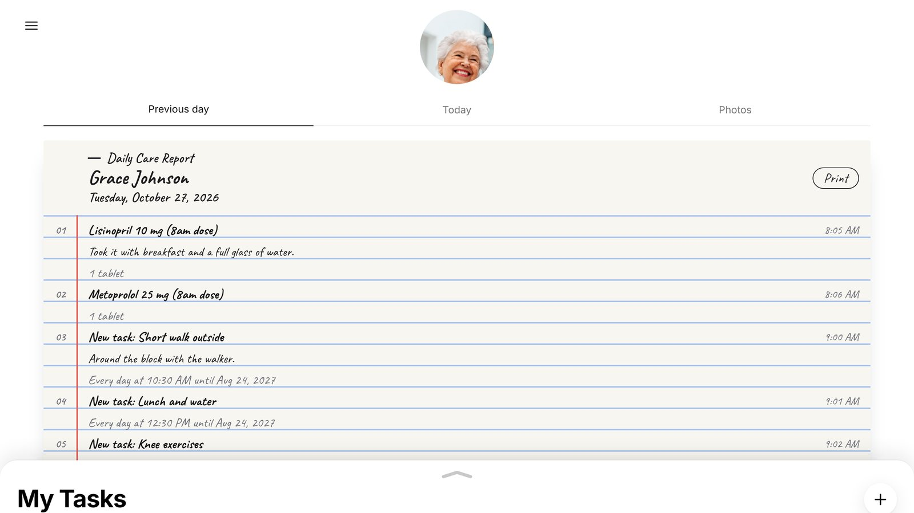
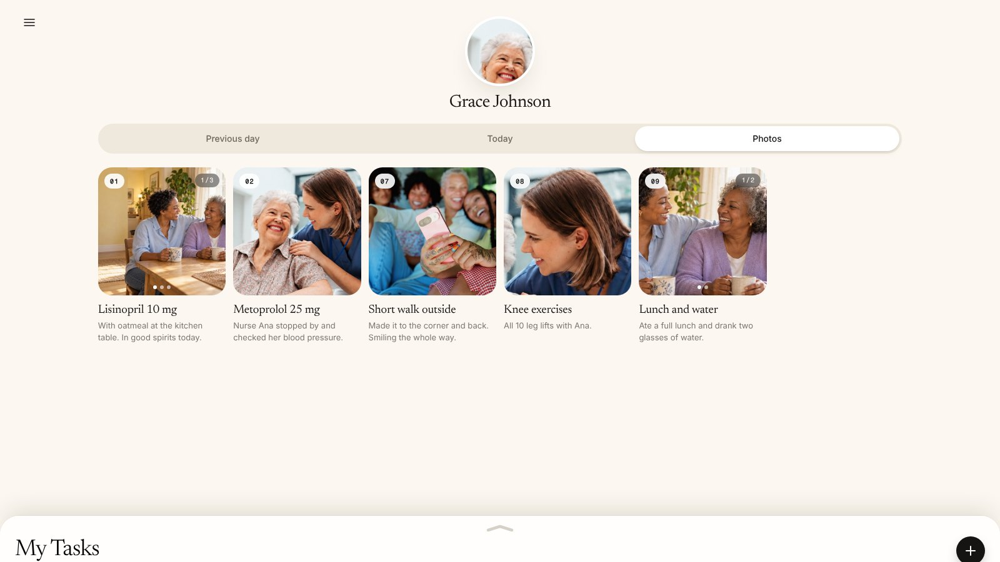
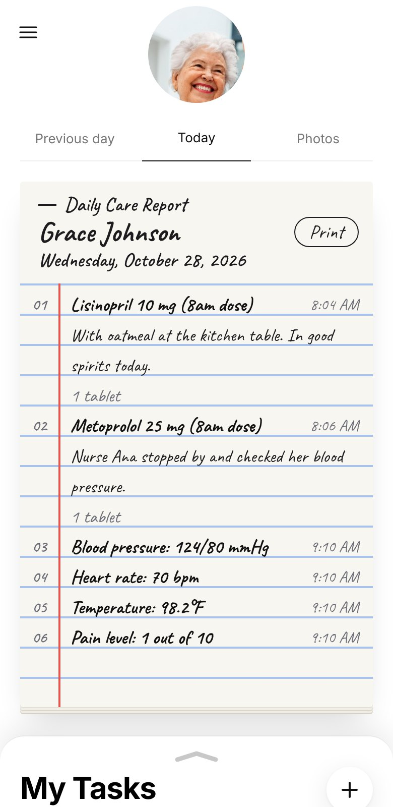
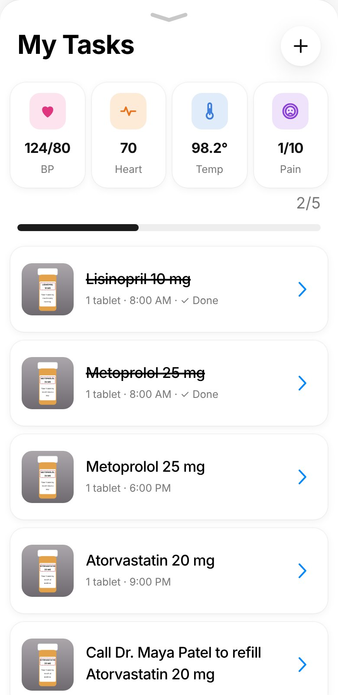

Care for them,
together.
Medications, visits and daily updates for someone you love after the hospital, shared with the whole family.
Get started


Every shift, in pictures.
Each photo added in My Tasks goes to Photos and the daily report with its note, so the whole family sees how the day went, from a phone or a computer.
They’re more than a patient.
A parent. A friend.
Someone coming home.
A whole life worth caring for.
Adltrack handles the care list, so your time together can be about them.
Everyone on the same page. Finally.
Open Adltrack and the day is right there: what’s been given, what’s next, and who’s on it. Tick off a dose, add a note or a photo, and the whole family sees it. No more group texts, guessing or doubled doses.



part of care.
The everyday love. The little check-ins.
The people by your side.
Your people.
One shared plan.
Add family and paid caregivers with their email and phone. You choose who gives the doses and who just follows along, and everyone sees the same report and gets the same alerts.
Meet your circle ↗Kids need care too.
After a hospital stay, a child needs care at home just like anyone else. Scan their discharge papers, set each dose, and share the day with the other parent, the grandparents or the sitter.
Our elders need care too.
Coming home from the hospital can mean new pills, new visits and new routines. Adltrack keeps them in one place, and keeps the children, grandchildren and caregivers in the loop.